2D Rasterizer
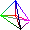
linearly interpolate colors on lines using DDA
fill a triangle using DDA
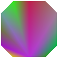
Goaraud fill a polygon
Goaraud fill a polygon
Fill given n-vertex polygon using even-odd rule
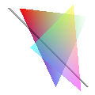
fill transparent shapes
Using the Digital Differential Analyzer (DDA) Algorithm to create images with gradient line color or gradient fill color.
link to assignment requirements for 2D rasterizer
3D Rasterizer
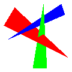
use a depth buffer to keep track of 3D objects' relative position
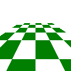
apply frustum technique
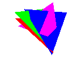
rotate 3D objects based on given axis and show depth relations
show depth relations
apply gradient fill to 3D objects
Use the Model/View transformations to perform rotation, scaling, translations and matrices. Next, clip planes, apply the
projection matrix, perform frstum clipping and a viewport transformation. Finally, rasterize traingles into fragments
and use depth buffer to determine the relative positions of 3D objects.
link to assignment requirements for 3D rasterizer
Raytracer
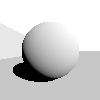
create shadows on plane
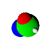
create shadows for overlapping objects
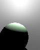
render light source from inside a sphere
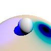
render complicated shadows with objects
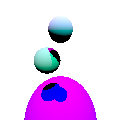
render complicated shadows with objects
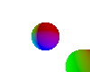
render multiple suns sources
Use ray emission and ray collision to generate 3D objects. Then, use Lambert's law to illuminate objects and create shadows.
link to assignment requirements for raytracer
Animation
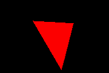
animate changing shapes
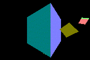
animate multiple cubes
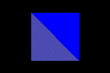
animate changing shapes
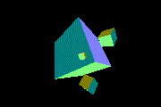
create shadows for overlapping objects
depict obejects based on their relative relations to parents
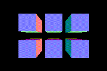
use Euler to depict object orientations
Render animations with a combination of a scene graph and time-varying parameters.
link to assignment requirements for animation